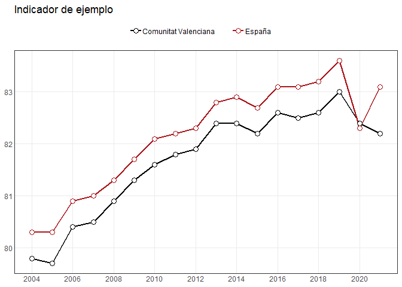
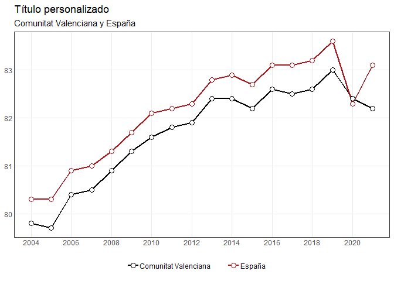

indicaR es un paquete de R para consultar y visualizar una colección de indicadores estadísticos.
El paquete permite:
- descubrir los indicadores disponibles;
- consultar su contenido, cobertura y dimensiones;
- filtrar los datos por período, territorio y otras dimensiones;
- obtener los resultados como
data.frame; - generar visualizaciones mediante funciones basadas en
ggplot2.
Las funciones de visualización también pueden utilizarse con datos externos: no es necesario trabajar con los indicadores incluidos en indicaR.
Instalación
La versión de desarrollo puede instalarse desde GitHub:
# install.packages("pak")
pak::pak("vpergim/indicaR")También puede utilizarse remotes:
# install.packages("remotes")
remotes::install_github("vpergim/indicaR")Consulta de indicadores
Cargamos el paquete:
Indicadores disponibles
listar_indicadores() permite consultar el catálogo de indicadores.
La columna id_dataset contiene el identificador utilizado por el resto de funciones de consulta.
indicadores <- listar_indicadores()
head(indicadores)
#> # A tibble: 6 × 5
#> id_dataset variable operacion organismo periodo
#> <chr> <chr> <chr> <chr> <chr>
#> 1 CCAA_SEXO_A_01 ESPERANZA DE VIDA a… Indicado… INE 1975-2…
#> 2 CCAA_SEXO_A_02 ESPERANZA DE VIDA a… Indicado… INE 1975-2…
#> 3 CCAA_SEXO_EDAD_A_01 TASA DE MORTALIDAD … Tablas d… INE 1991-2…
#> 4 CCAA_SEXO_EDAD_A_02 ESPERANZA DE VIDA p… Tablas d… INE 1991-2…
#> 5 CCAA_SEXO_EDAD_NIVELEDUCATIVO_A_01 ESPERANZA DE VIDA p… Indicado… INE 2016-2…
#> 6 CV_SECT1_TAMANYOEMP_A_01 EMPRESAS por sector… DIRCE INE 2020-2…Información sobre un indicador
La función devuelve información sobre:
- los metadatos del indicador;
- el número de observaciones;
- la cobertura temporal;
- las dimensiones disponibles.
info_indicador("TERRITORIO_SEXO_EDAD_A_01")
#> $metadata
#> # A tibble: 1 × 5
#> id_dataset variable operacion organismo periodo
#> <chr> <chr> <chr> <chr> <chr>
#> 1 TERRITORIO_SEXO_EDAD_A_01 POBLACIÓN QUE ESTUDIA FORMAC… AGENDA20… INE 2015-2…
#>
#> $n_observaciones
#> [1] 880
#>
#> $cobertura
#> $cobertura$anyo_min
#> [1] 2015
#>
#> $cobertura$anyo_max
#> [1] 2025
#>
#> $cobertura$frecuencia
#> [1] "A"
#>
#>
#> $dimensiones
#> dimension n_valores
#> 1 territorio 20
#> 2 tipo_territorio 2
#> 3 cod_ccaa 19
#> 4 ccaa 19
#> 5 cod_provincia 0
#> 6 provincia 0
#> 7 sexo 2
#> 8 edad 2
#> 9 edad_min 2
#> 10 edad_max 2
#> 11 edad_tipo 1Valores disponibles
Antes de realizar una consulta puede comprobarse qué valores contiene una dimensión:
valores_indicador(
"TERRITORIO_SEXO_EDAD_A_01",
"sexo"
)
#> [1] "Hombres" "Mujeres"
valores_indicador(
"TERRITORIO_SEXO_EDAD_A_01",
"edad"
)
#> [1] "De 15 a 24 años" "De 25 a 64 años"Obtener los datos
consultar_indicador() devuelve un data.frame que puede utilizarse posteriormente con cualquier herramienta de R.
datos <- consultar_indicador(
"TERRITORIO_SEXO_EDAD_A_01",
sexo = "Mujeres",
edad = "De 25 a 64 años",
tipo_territorio = "ccaa"
)
head(datos)
#> # A tibble: 6 × 21
#> id_dataset variable operacion organismo frecuencia territorio tipo_territorio
#> <chr> <chr> <chr> <chr> <chr> <chr> <chr>
#> 1 TERRITORIO_SEXO… POBLACI… AGENDA20… INE A Andalucía ccaa
#> 2 TERRITORIO_SEXO… POBLACI… AGENDA20… INE A Andalucía ccaa
#> 3 TERRITORIO_SEXO… POBLACI… AGENDA20… INE A Andalucía ccaa
#> 4 TERRITORIO_SEXO… POBLACI… AGENDA20… INE A Andalucía ccaa
#> 5 TERRITORIO_SEXO… POBLACI… AGENDA20… INE A Andalucía ccaa
#> 6 TERRITORIO_SEXO… POBLACI… AGENDA20… INE A Andalucía ccaa
#> # ℹ 14 more variables: cod_ccaa <chr>, ccaa <chr>, cod_provincia <chr>,
#> # provincia <chr>, sexo <chr>, edad <chr>, edad_min <int>, edad_max <int>,
#> # edad_tipo <chr>, periodo <chr>, anyo <int>, trimestre <int>, mes <int>,
#> # valor <dbl>Fuentes de los datos
Los indicadores distribuidos por indicaR proceden de distintas fuentes. El organismo responsable y la operación estadística correspondiente, en su caso, se conservan en los metadatos asociados a cada indicador.
indicaR transforma y homogeneiza estos datos para facilitar su consulta y visualización. La inclusión de los datos en el paquete no implica que indicaR sea su fuente original.
Visualización
Las funciones gráficas de indicaR reciben datos en formato largo y devuelven objetos ggplot.
Esto permite utilizar tanto datos obtenidos mediante consultar_indicador() como cualquier otro conjunto de datos compatible.
Series temporales
Por ejemplo, podemos crear unos datos ilustrativos:
datos_ejemplo <- data.frame(
territorio = rep(
c("Comunitat Valenciana", "España"),
each = 18
),
anyo = rep(2004:2021, times = 2),
valor = c(
79.8, 79.7, 80.4, 80.5, 80.9, 81.3,
81.6, 81.8, 81.9, 82.4, 82.4, 82.2,
82.6, 82.5, 82.6, 83.0, 82.4, 82.2,
80.3, 80.3, 80.9, 81.0, 81.3, 81.7,
82.1, 82.2, 82.3, 82.8, 82.9, 82.7,
83.1, 83.1, 83.2, 83.6, 82.3, 83.1
)
)
colores <- c(
"Comunitat Valenciana" = "#000000",
"España" = "#AA151B"
)
grafico_lineas(
datos_ejemplo,
grupo = "territorio",
colores = colores,
titulo = "Indicador de ejemplo"
)
Personalización
El resultado puede seguir modificándose con ggplot2:
p <- grafico_lineas(
datos_ejemplo,
grupo = "territorio",
colores = colores
)
p +
ggplot2::labs(
title = "Título personalizado",
subtitle = "Comunitat Valenciana y España"
) +
ggplot2::theme(
legend.position = "bottom"
)
Agradecimientos
El desarrollo de indicaR se ha realizado en el marco del convenio de colaboración entre la Generalitat Valenciana (Conselleria de Economía, Hacienda y Administración Pública) y la Universitat de València para el desarrollo de las previsiones macroeconómicas de la economía valenciana.
Se agradece el apoyo institucional y financiero proporcionado a través de este convenio, que ha hecho posible el desarrollo de las herramientas y recursos en los que se enmarca este paquete.
La documentación completa de cada función está disponible mediante la ayuda de R y en el sitio web del paquete.